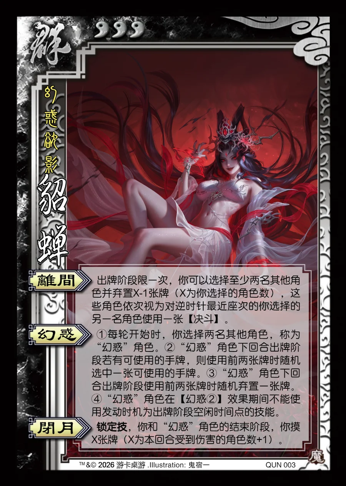

点击卡面查看大图
群
魔貂蝉
♥3幻惑欲影
离间
出牌阶段限一次，你可以选择至少两名其他角色并弃置X-1张牌（X为你选择的角色数），这些角色依次视为对逆时针最近座次的你选择的另一名角色使用一张【决斗】。
幻惑
①每轮开始时，你选择两名其他角色，称为“幻惑”角色。②“幻惑”角色下回合出牌阶段若有可使用的手牌，则使用前两张牌时随机选中一张可使用的手牌。③“幻惑”角色下回合出牌阶段使用前两张牌时随机弃置一张牌。④“幻惑”角色在【幻惑②】效果期间不能使用发动时机为出牌阶段空闲时间点的技能。
闭月锁定技
锁定技，你和“幻惑”角色的结束阶段，你摸X张牌（X为本回合受到伤害的角色数+1）。